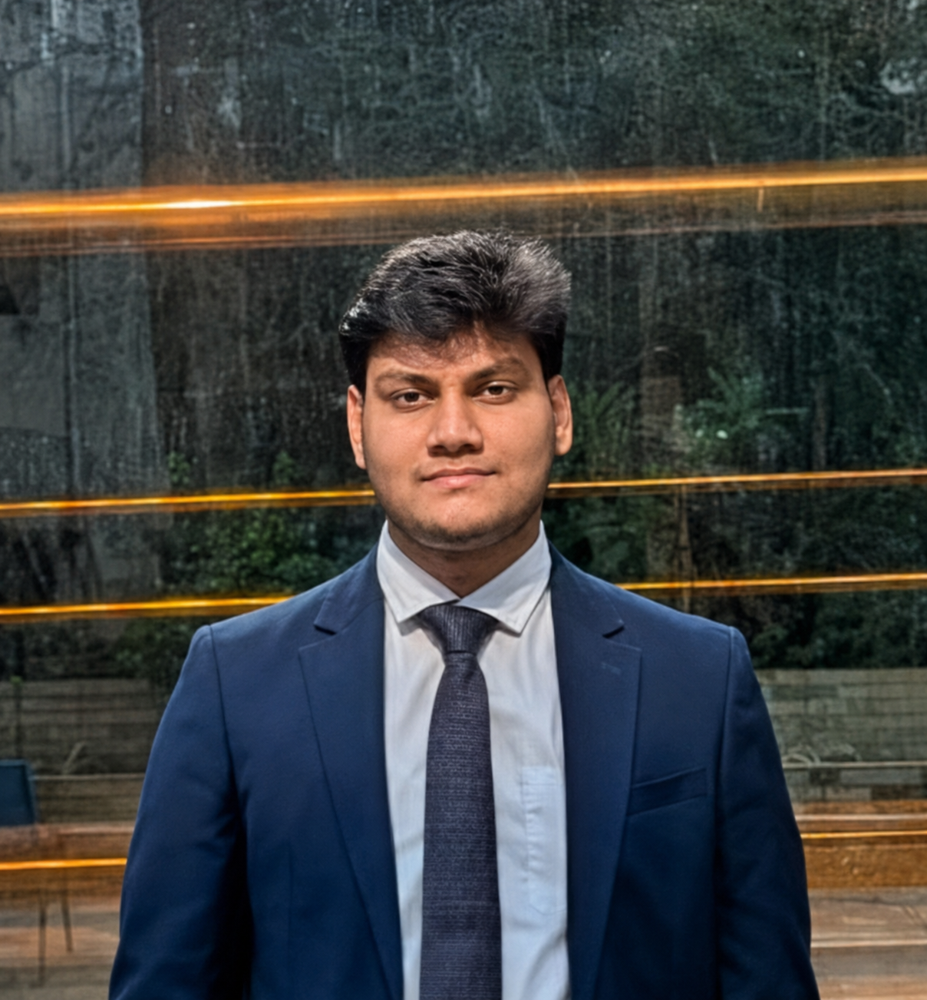
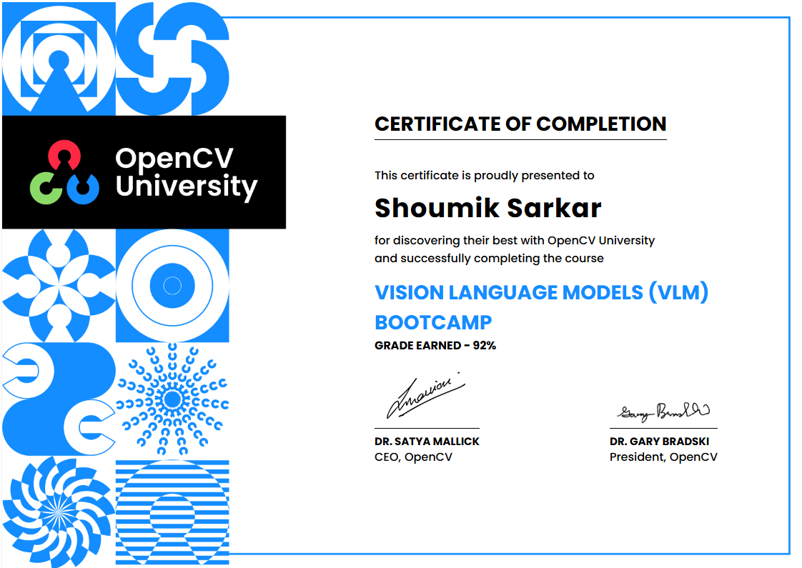

Computer Vision
Developing visual models that extract robust signals from images and support evidence-led decisions.
Turning signals, pixels, language, and data into useful AI experiences.

What I do
Developing visual models that extract robust signals from images and support evidence-led decisions.
Combining OCR, language models, and visual context to understand information beyond a single modality.
Working with acoustic descriptors and audio-visual fusion for richer, context-aware AI systems.
Taking ideas from research and data pipelines to usable APIs, interactive tools, and polished interfaces.
My approach
I start by understanding the problem, data, and people involved. Then I build iteratively - from research and prototyping through evaluation, deployment, and refinement - with a focus on responsible, practical outcomes.
Currently
Contributing to end-to-end ML pipelines and AI-driven products, with hands-on work in dataset evaluation, Python-based analysis, and scalable deployment workflows.
An end-to-end multimodal deception-detection experience that combines face, audio, and visual evidence into a single prediction. Built for transparent, real-time exploration of complex behavioural signals.
Tap a node to see how I use it. These are the tools I reach for when an idea needs to become a reliable system.
Contributing to the design and development of end-to-end ML pipelines and AI-driven digital products, with a focus on process efficiency and responsible deployment. Working alongside senior engineers to translate system requirements into technical solutions for local, scalable AI tools, while supporting dataset evaluation and performance analysis through Python-based data workflows.
Conducting requirement research and technical analysis for client software products before development, translating product needs into actionable specifications. Contributing across project-based software builds, including API integration and database management, while collaborating with the development team to scope work and keep deliverables aligned with client requirements.

OpenCV University, 2026. An intensive exploration of multimodal AI architectures, visual feature manipulation, and vision-language model workflows.